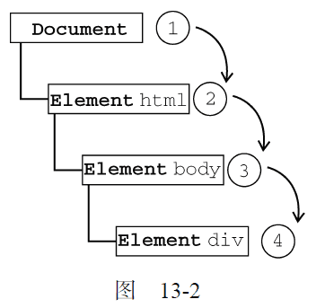

13.1 事件流
当浏览器发展到第四代时（IE4 及Netscape Communicator 4），浏览器开发团队遇到了一个很有意思的问题：页面的哪一部分会拥有某个特定的事件？要明白这个问题问的是什么，可以想象画在一张纸上的一组同心圆。如果你把手指放在圆心上，那么你的手指指向的不是一个圆，而是纸上的所有圆。两家公司的浏览器开发团队在看待浏览器事件方面还是一致的。如果你单击了某个按钮，他们都认为单击事件不仅仅发生在按钮上。换句话说，在单击按钮的同时，你也单击了按钮的容器元素，甚至也单击了整个页面。
事件流描述的是从页面中接收事件的顺序。但有意思的是，IE 和Netscape 开发团队居然提出了差不多是完全相反的事件流的概念。IE 的事件流是事件冒泡流，而Netscape Communicator 的事件流是事件捕获流。
13.1.1 事件冒泡
IE 的事件流叫做事件冒泡（event bubbling），即事件开始时由最具体的元素（文档中嵌套层次最深的那个节点）接收，然后逐级向上传播到较为不具体的节点（文档）。以下面的HTML 页面为例：
<!DOCTYPE html>
<html>
<head>
<title>Event Bubbling Example</title>
</head>
<body>
<div id="myDiv">Click Me</div>
</body>
</html>
如果你单击了页面中的<div>元素，那么这个click 事件会按照如下顺序传播：
(1) <div>
(2) <body>
(3) <html>
(4) document
也就是说，click 事件首先在<div>元素上发生，而这个元素就是我们单击的元素。然后，click事件沿DOM树向上传播，在每一级节点上都会发生，直至传播到document 对象。图13-1 展示了事件冒泡的过程。
所有现代浏览器都支持事件冒泡，但在具体实现上还是有一些差别。IE5.5 及更早版本中的事件冒泡会跳过<html>元素（从<body>直接跳到document）。IE9、Firefox、Chrome 和Safari 则将事件一直冒泡到window 对象。
13.1.2 事件捕获
Netscape Communicator 团队提出的另一种事件流叫做事件捕获（event capturing）。事件捕获的思想是不太具体的节点应该更早接收到事件，而最具体的节点应该最后接收到事件。事件捕获的用意在于在事件到达预定目标之前捕获它。如果仍以前面的HTML 页面作为演示事件捕获的例子，那么单击<div>元素就会以下列顺序触发click 事件。
(1) document
(2) <html>
(3) <body>
(4) <div>
在事件捕获过程中，document 对象首先接收到click 事件，然后事件沿DOM 树依次向下，一直传播到事件的实际目标，即<div>元素。图13-2 展示了事件捕获的过程。

虽然事件捕获是Netscape Communicator 唯一支持的事件流模型，但IE9、Safari、Chrome、Opera和Firefox 目前也都支持这种事件流模型。尽管“DOM2 级事件”规范要求事件应该从document 对象开始传播，但这些浏览器都是从window 对象开始捕获事件的。
由于老版本的浏览器不支持，因此很少有人使用事件捕获。我们也建议读者放心地使用事件冒泡，在有特殊需要时再使用事件捕获。
13.1.3 DOM事件流
“DOM2级事件”规定的事件流包括三个阶段：事件捕获阶段、处于目标阶段和事件冒泡阶段。首先发生的是事件捕获，为截获事件提供了机会。然后是实际的目标接收到事件。最后一个阶段是冒泡阶段，可以在这个阶段对事件做出响应。以前面简单的HTML 页面为例，单击<div>元素会按照图13-3所示顺序触发事件。
在DOM 事件流中，实际的目标（<div>元素）在捕获阶段不会接收到事件。这意味着在捕获阶段，事件从document 到<html>再到<body>后就停止了。下一个阶段是“处于目标”阶段，于是事件在<div>上发生，并在事件处理（后面将会讨论这个概念）中被看成冒泡阶段的一部分。然后，冒泡阶段发生，事件又传播回文档。
多数支持DOM 事件流的浏览器都实现了一种特定的行为；即使“DOM2 级事件”规范明确要求捕获阶段不会涉及事件目标，但IE9、Safari、Chrome、Firefox 和Opera 9.5 及更高版本都会在捕获阶段触发事件对象上的事件。结果，就是有两个机会在目标对象上面操作事件。
IE9、Opera、Firefox、Chrome 和Safari 都支持DOM 事件流；IE8 及更早版本不支持DOM 事件流。